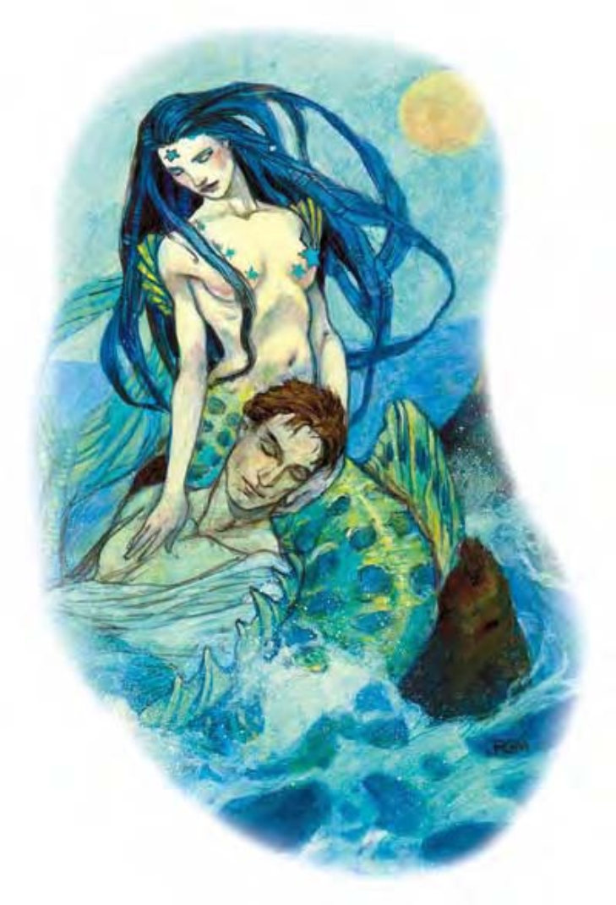

他们有着美丽的人类上身、手臂与头，然而取代脚的是一条布满鳞片的巨大鱼尾。
人鱼族是爱玩的海中住民。他们对于海面上的生物心怀戒慎，但并非充满敌意。比起交锋战斗，他们还宁愿躺到岩石上，慵懒地晒晒太阳。
男女人鱼所穿戴的都是贝壳、珊瑚或其他海底饰品。
遇上人鱼族的冒险者多半沦为恶作剧对象。虽然人鱼族开的玩笑有时很残酷，这不代表他们本性邪恶。但若海面上的生物伤害他们，人鱼族可不是易予的敌手。
人鱼族由头到尾长约8英尺，重约400磅。
人鱼族通晓通用语与水族语。
在家乡之外出没的人鱼族多为武者，数据域位中为1级武者的范例。
| 资料栏位 | 人鱼族、1级武者 中型人形生物 (水生) |
| 生命骰 | 1d8+2 (6HP) |
| 先攻 | +1 |
| 速度 | 5英尺 (1格)、游泳50英尺 |
| 防御等级 | 13 (+1敏捷、+2鳞皮)、接触11、措手不及12 |
| 基本攻击/擒抱 | +1 / +2 |
| 攻击 | 三叉矛+2近战 (1d8+1)；或重型十字弓+2远程 (1d10 / 19-20) |
| 全力攻击 | 三叉矛+2近战 (1d8+1)；或重型十字弓+2远程 (1d10 / 19-20) |
| 占据/触及 | 5英尺 / 5英尺 |
| 特殊攻击 | ― |
| 特殊能力 | 两栖、昏暗视觉 |
| 豁免 | 强韧+4、反射+1、意志-1 |
| 属性 | 力量13、敏捷13、体质14、智力10、感知9、魅力10 |
| 技能 | 聆听+3、侦察+3、游泳+9 |
| 专长 | 警觉 |
| 环境 | 温带水域 |
| 组织 | 一伙 (2-4)、巡逻队 (11-20，加上2个3级校尉及1个3-6级干部) 或一团 (30-60，加上每20个成年人鱼1个3级军士、5个5级校尉、3个7级队长及10只海豚) |
| 宝藏 | 标准 |
| 阵营 | 通常绝对中立 |
| 进化 | 视人物职业而定 |
| 等级修正值 | +1 |
人鱼族偏好使用贝壳与珊瑚制的重型十字弓，箭则使用河豚鱼骨，水底射程单位30英尺。人鱼族通常会在敌人靠近前先挥一阵箭雨，再改换三叉矛战斗。
两栖 (特异)：人鱼族在水中与空气中均可呼吸，虽然他们很少远离水边。
技能：人鱼族在进行任何特殊动作或闪身避祸时，“游泳”检定具有+8种族加值。即使分心或受困，他们在进行“游泳”检定时都可以随时取10。若以直线前进，则可在游泳时进行奔跑动作。
此处列出的人鱼武者在计算种族修正值前，具有下列属性：力量13、敏捷11、体质12、智力10、感知9、魅力8。
人鱼生活在非永久性的社群中，栖息地随鱼群及猎场而变。他们通常与海豚为伴。与人鱼族正面对上的冒险者通常是遇到侦察或狩猎中的巡逻队。
人鱼尊崇创造他们与洛卡鱼人的神�o依艾草。
人鱼的适合职业为吟游诗人，多数的人鱼干部皆为吟游诗人。非吟游诗人的人鱼施法者职业则多半为导师。人鱼族牧师崇敬的神是依艾草，可由下列领域择二：动物、保护或水。